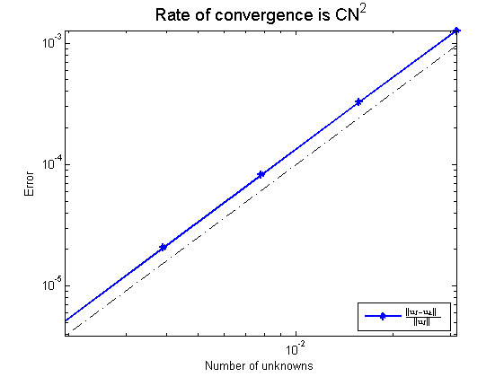
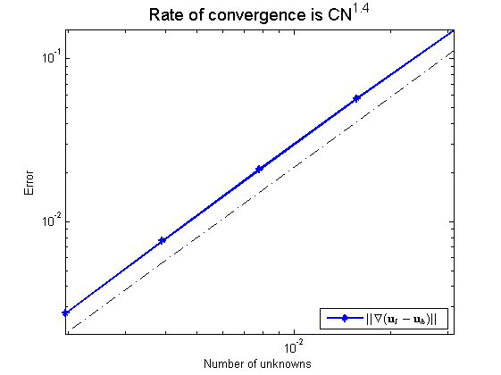
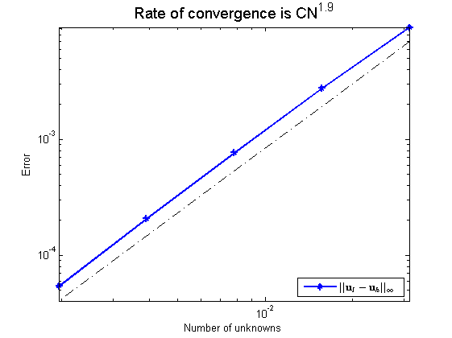
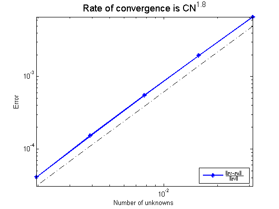

format short e
k = 4;
ite = zeros(k+1,1); time = zeros(k+1,1); rate = zeros(k+1,1);
errVelL2 = zeros(k+1,1); errVelH1 = zeros(k+1,1);
errVelInfi = zeros(k+1,1); errPreL2 = zeros(k+1,1); residual = cell(k+1,1);
for i = 6:k+6
n = 2^i; level = i-1;
[data, uh, vh, ph, f1h, f2h, gh, uI, vI, pI, width] = dataOseenRotation(n);
[uh, vh, ph, ite(i-5), time(i-5), residual{i-5}] = VcycleRotation(uh, vh, ph, f1h, f2h, gh, data.omega, level, width);
ph = ph - mean(ph(:));
[errVelL2(i-5), errVelH1(i-5), errVelInfi(i-5), errPreL2(i-5)] = Error(uh, vh, ph, uI, vI, pI);
end
for i = 1:k+1
for j = 4:length(residual{i})
rate(i) = rate(i) + exp(log(residual{i}(j)/residual{i}(4)) / (j-3));
end
rate(i) = rate(i) / length(residual{i});
end
size = 2.^(6:k+6); size = size';
display('Table 1: Vcycle');
colname = {'#1/h', 'errVelL2', 'errVelH1', 'errVelInfi', 'errPreL2', 'Ite', 'Rate', 'Time'};
disptable(colname,size,[], errVelL2,[], errVelH1,[], errVelInfi,[], errPreL2,[], ite,[], rate,[], time,[]);
figure; showrate(width./size, errVelL2);
h1 = legend('$ \frac {|| \mathbf{u}_I - \mathbf{u}_h ||} {|| \mathbf{u}_I ||}$','Location','southeast');
set(h1,'Interpreter','latex')
figure; showrate(width./size, errVelH1);
h2 = legend('$|| \nabla(\mathbf{u}_I - \mathbf{u}_h) ||$','Location','southeast');
set(h2,'Interpreter','latex')
figure; showrate(width./size, errVelInfi);
h3 = legend('$|| \mathbf{u}_I - \mathbf{u}_h ||_{\infty}$','Location','southeast');
set(h3,'Interpreter','latex')
figure; showrate(width./size, errPreL2);
h4 = legend('$ \frac {|| p_I - p_h ||} {|| p_I||}$','Location','southeast');
set(h4,'Interpreter','latex')
clear all
Table 1: Vcycle
#1/h errVelL2 errVelH1 errVelInfi errPreL2 Ite Rate Time
64 0.001271 0.14932 0.0092752 0.0066478 11 0.34535 0.8851502
128 0.00032638 0.057012 0.0027558 0.0019554 9 0.29581 2.359203
256 8.257e-05 0.021077 0.00076913 0.00055537 10 0.32856 10.07486
512 2.0752e-05 0.0076468 0.00020682 0.0001539 11 0.3456 46.56161
1024 5.1956e-06 0.0027439 5.4317e-05 4.117e-05 11 0.35522 194.8292
   